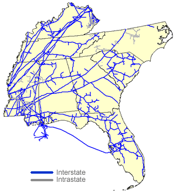

|
About U.S. Natural Gas Pipelines - Transporting Natural
Gas
based on data through 2007/2008 with selected updates |
|||||||||||||||||||||||||||||||||||||||||||||||||||||||||||||||||||||||||||||||||||||||||||||||||||||||||||||
|---|---|---|---|---|---|---|---|---|---|---|---|---|---|---|---|---|---|---|---|---|---|---|---|---|---|---|---|---|---|---|---|---|---|---|---|---|---|---|---|---|---|---|---|---|---|---|---|---|---|---|---|---|---|---|---|---|---|---|---|---|---|---|---|---|---|---|---|---|---|---|---|---|---|---|---|---|---|---|---|---|---|---|---|---|---|---|---|---|---|---|---|---|---|---|---|---|---|---|---|---|---|---|---|---|---|---|---|---|---|
|
Twenty-three interstate, and at least eight intrastate, natural gas pipeline companies operate within the Southeast Region (Alabama, Florida, Georgia, Kentucky, Mississippi, North Carolina, South Carolina, and Tennessee). Fifteen of the twenty-one interstate natural gas pipelines originate in the Southwest Region and receive most of their supplies from the Gulf of Mexico or from the States of Texas and/or Louisiana. Of those fifteen, nine natural gas pipelines (see Table below) actually flow all or a substantial portion, of their deliveries beyond the region, to points within the Northeast or Midwest regions. The remaining natural gas pipelines companies, with the exception of Columbia Gas Transmission Company which is primarily a Northeast Regional pipeline that also supplies a small territory in northern North Carolina, serve the needs of natural gas shippers and customers within the region itself. Transportation of Natural Gas to Atlantic & Gulf States
The largest natural gas pipeline system serving primarily the Southeast is the Southern Natural Gas Company (3.9 Bcf per day). Its system transports natural gas supplies from Southwestern production areas to customers in Mississippi, Alabama, Georgia, and South Carolina and to a small section of southern Tennessee. With interconnections provided by its subsidiary, South Georgia Natural Gas Company (0.1 Bcf per day), the Southern Natural Gas Company also provides transportation service to parts of northern Florida. Southern Natural Gas Company is the major supplier of natural gas to the Atlanta Gas Light Company (Georgia) and the South Carolina Gas Company, two of the largest local distribution companies (LDCs) in the region. The Gulf South Pipeline Company also is a major transporter of natural gas in the southern portion of the region, providing transportation service to and within Mississippi, Alabama, and the western panhandle of Florida. |
Southeast Region Natural Gas Pipeline Network 
|
||||||||||||||||||||||||||||||||||||||||||||||||||||||||||||||||||||||||||||||||||||||||||||||||||||||||||||
In 2002, the Elba Island, Georgia, LNG import facility reopened after being closed since 1980. To provide transportation services to a key customer of the facility, the SCG Pipeline Company system, now part of the Carolina Gas Transmission Corporation, built a 0.2 Bcf per day, 18-mile natural gas pipeline in 2003 between Elba Island and a new 875 MW natural gas fired power plant located in southeastern South Carolina. This natural gas pipeline, in addition to a restored twin-pipeline system between the Elba Island facility and Southern Natural Gas Company’s system in Georgia, now can deliver up to 1.2 Bcf per day into the Carolina Gas Transmission Corporation system (which was reclassified as an interstate system in 2004). Following an expansion of the Elaba Island facility in 2006, the Southern Natural Gas Company extended its reach into Florida by completing its Cypress Pipeline system. The Cypress Pipeline system linked Elba Island supplies in Georgia to interconnections with Florida Gas Transmission Company in northeastern Florida. The 167-mile Cypress Pipeline system was itself expanded in 2008, and is now capable of transporting up to 0.4 Bcf per day between the two States. Natural gas supply levels to the two major natural gas pipelines serving the State of Florida, Florida Gas Transmission Company and Gulfstream Natural Gas Pipeline Company, increased significantly in 2008 with the completion of the 1.1 Bcf per day Southeast Supply Header (SESH) pipeline. The SESH, a joint venture between Spectra Energy and Centerpont Energy Transmission, is a 270-mile pipeline extending from the Perryville Hub in northern Louisiana to interconnections with the two pipelines in southern Alabama. The system will also interconnect with several other interstate natural gas pipelines along its route beginning in 2009. Completion of these interconnections will provide an additional outlet for natural gas flowing from the expanding production areas of northeast Texas' Barnett Shale and Bossier Sands formations, and Northern Louisiana's Haynesville Shale area, and greater access to Southeast and Northeast regional markets. Gulf of Mexico Natural Gas Transportation Corridor The 1.1 Bcf per day Gulfstream Natural Gas Pipeline Company system became operational in June 2002. It has the capability to transport natural gas supplies from the Mobile Bay area of Alabama across the Gulf of Mexico to points in west central Florida. Since 2002, the portion of this natural gas pipeline system within the State of Florida has been extended to the east coast of the State as well, although some initial delays in power plant development there slowed its final phases. The completion of the Gulfstream Natural Gas Pipeline Company system meant that Florida Gas Transmission Pipeline Company was no longer the only source of natural gas available to the State's natural gas shippers and customers. Yet, given the increasing demand for natural gas in Florida, especially from new power generation plants, the Florida Gas Transmission Pipeline Company continues to expand its own system. Between 2000 and 2007, it installed 1.2 Bcf per day of new capacity and anticipates adding another 1.1 Bcf per day in 2011 with completion of Phase VIII and Mobile Bay Lateral expansions. The entire system extends from southeastern Texas, through southern Louisiana, Mississippi, Alabama, and into and throughout Florida. A significant portion of the region's natural gas pipeline capacity, as well as a primary source of natural gas supplies for the Gulfstream Natural Gas Pipeline Company system, comes from the Gulf of Mexico on three natural gas pipeline systems: the Dauphin Island Gathering System (1.2 Bcf per day), the Destin Pipeline L. P. (1.2 Bcf per day) and the Chandeleur Pipeline Company (0.33 Bcf per day). The latter two systems transport natural gas from Gulf of Mexico production areas to onshore delivery points at Pascagoula, Mississippi, while the Dauphin Island Gathering System directs its flow to Alabama and interconnections with at least six major interstate systems, including the Gulfstream Natural Gas Pipeline Company system. In Mississippi, the Atmos Energy Gas Company (formerly Mississippi Valley Gas Company) not only provides transportation from the growing conventional natural gas fields in the area but also from the developing coal-bed methane production sources in the State as well. Similarly, the Enterprise Intrastate-Alabama Pipeline Company owns/operates about 450 miles of natural gas gathering and transmission pipelines in the coal-bed methane rich Black Warrior Basin in western Alabama. The system gathers supplies for delivery to the Southern Natural Gas Company and Tennessee Gas Pipeline Company systems, as well as to regional local distribution companies and municipalities. The northern tier of the Southeast Region is served primarily by regional interstate natural gas pipelines such as the East Tennessee Natural Gas Company and the Enbridge Pipelines (AlaTenn) Inc. (formerly Alabama-Tennessee Gas Pipeline Company) systems, who, in turn, receive their supplies mainly from those interstate natural gas pipelines that traverse the region through Tennessee and Kentucky. These interconnecting natural gas supply pipelines include the ANR Pipeline Company, Columbia Gulf Transmission Company, Midwestern Transmission Company, Tennessee Gas Pipeline Company, Texas Eastern Transmission Company, Texas Gas Transmission Company, and the Trunkline Gas Company systems. These natural gas pipelines, with the exception of interconnections with regional natural gas pipelines and deliveries to some large industrial facilities and natural gas fired electric power generation facilities within the region, reserve the major share of system deliverability for delivery points in the north and east of the region. Columbia Gulf Transmission Company, for example, delivers more than 90 percent of its transported volumes to its affiliate, Columbia Gas Transmission Company, at the Kentucky/West Virginia border; however, over the past several years, it has also constructed laterals to supply new natural gas fired power plants built along its route. Of the several intrastate pipelines operating within the region, three are primarily transporters of local natural gas production to local distribution networks or provide interconnections with other natural gas pipelines. For instance, Tengasco Pipeline Company links production from the developing Swan Creek field in Hawkins county, Tennessee with local municipalities, and can extend transportation services to shippers with destinations in Virginia via interconnections with the East Tennessee Natural Gas Company system.
|
|||||||||||||||||||||||||||||||||||||||||||||||||||||||||||||||||||||||||||||||||||||||||||||||||||||||||||||
| Principal Natural Gas Pipeline Companies Serving the Southeast Region
with links to pipeline web sites
|
|||||||||||||||||||||||||||||||||||||||||||||||||||||||||||||||||||||||||||||||||||||||||||||||||||||||||||||
{kind=link}